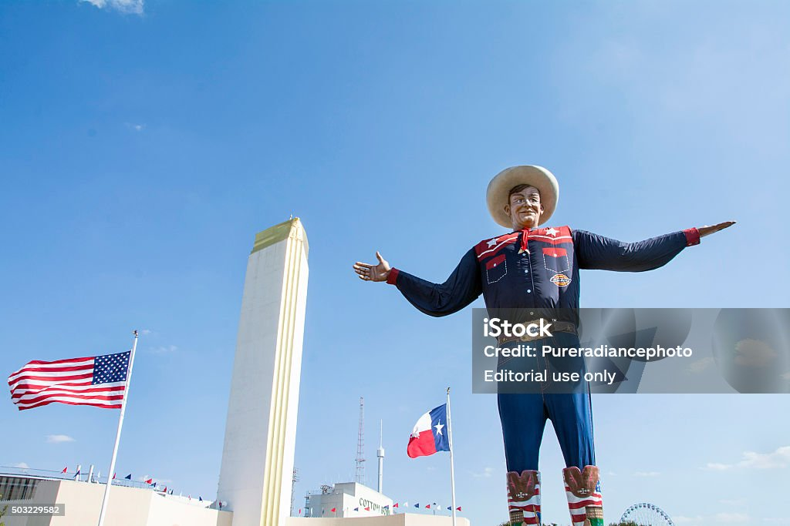

Tours of Texas
See the lone star state and all of it's unique quirks
"You May All Go to Hell and I Will Go to Texas” — Davy Crockett
"You May All Go to Hell and I Will Go to Texas” — Davy Crockett
Welcome to the Lone Star state!
Texas is a diverse and vibrant state offering a wide range of experiences for travelers. The state's major cities each have their unique charm. Austin is renowned for its live music scene, artistic vibe, and the impressive Texas State Capitol, while Dallas boasts modern architecture, a rich arts scene, and attractions like the Sixth Floor Museum at Dealey Plaza. Houston, with its sprawling size, is home to the Space Center Houston, the Houston Museum of Natural Science, and a dynamic culinary landscape. San Antonio, famous for its historic significance, features the iconic Alamo and the picturesque San Antonio River Walk.
For nature enthusiasts, Texas offers breathtaking landscapes. Big Bend National Park, situated along the Mexico border, provides stunning desert vistas, dramatic canyons, and the winding Rio Grande, ideal for hiking and stargazing. Guadalupe Mountains National Park, with its rugged peaks and diverse flora, invites adventurers to explore trails leading to Guadalupe Peak, the state's highest point. Padre Island National Seashore offers pristine beaches and opportunities for birdwatching and fishing.
Texas is also known for its lively events and festivals. South by Southwest (SXSW) in Austin is a must-visit for music and film enthusiasts, while Houston's Livestock Show and Rodeo offers a classic rodeo experience with live music and carnival attractions. The State Fair of Texas in Dallas features traditional fair elements, including rides, games, and an array of unique foods.